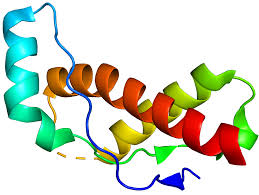

Completed
2024.6.23
On the Conjecture of Proteins as Genetic Material in Extremely, Extremely Special Organisms
Explores whether proteins can act as primitive genetic carriers, working from prion self-replication and reverse transcription, and treats the limits of the central dogma as the question at stake.
- Question
- Can proteins serve as genetic material in extremely unusual organisms, the way DNA and RNA do?
- Method
- Theoretical analysis. Tests whether the four classic approaches to identifying genetic material — isotope labelling, centrifugation, the subtraction principle and sequencing — still hold for retroviruses, and brings in hypotheses about the origins of proteins and viruses.
- Conclusion
- Proposes that reverse transcriptase acts as the genetic material of retroviruses only together with RNA, and suggests proteins may have played a genetic-material-like role during the transition from non-living to living systems. The author notes the question is still debated.